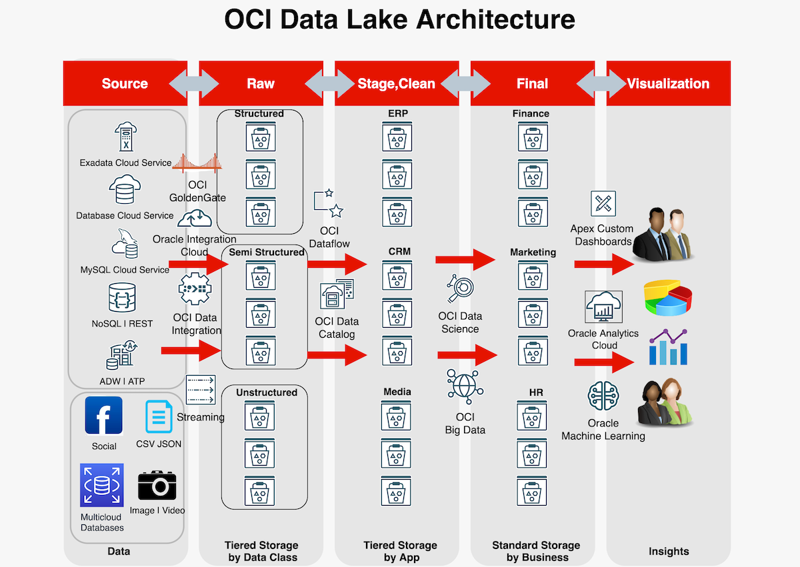
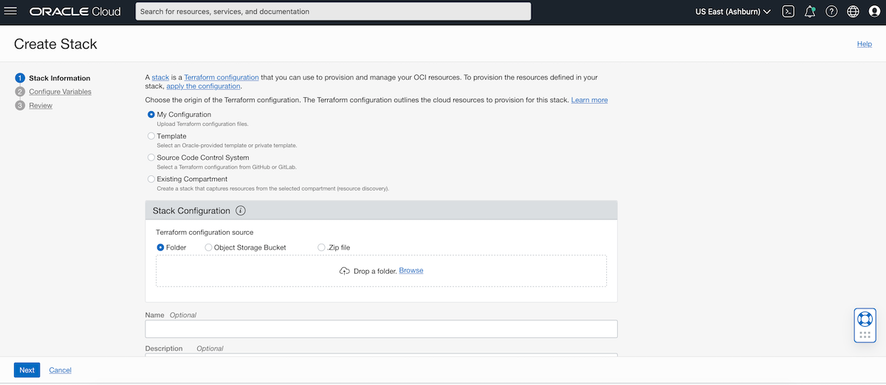

<div class="initial-content">
  <div id="main" role="main">

  <article class="page has-sidebar" itemscope itemtype="https://schema.org/CreativeWork">
    <meta itemprop="headline" content="Deploy a modern data lake on OCI">
    
    <meta itemprop="datePublished" content="2021-10-29T12:00:00+00:00">
    


    <header>
      <h1 id="page-title" class="page__title" itemprop="headline">Deploy a modern data lake on OCI
</h1>
      


    </header>

    <section class="page__content" itemprop="text">
      

        <picture class="aligncenter">
                <source srcset="assets/datalakeocichart_4481-9331b237844018b1.png 1x" />
                
            </picture>

<p>What is a data lake? Simply, a data lake is a place to store both your structured and unstructured data. It’s also a great method for organizing large volumes of diverse data from diverse sources.</p>

<p>In this article, we’ll guide you through deploying a data lake in OCI and quickly get you up and running so you can explore its many benefits!</p>

<p>For more information, see:</p>

<ul>
  <li><a href="https://docs.oracle.com/iaas/Content/GSG/Tasks/signingup.htm">Signing Up for Oracle Cloud Infrastructure</a></li>
  <li><a href="https://docs.oracle.com/en-us/iaas/Content/API/SDKDocs/terraformgettingstarted.htm">Getting started with Terraform</a></li>
  <li><a href="https://docs.oracle.com/en-us/iaas/Content/API/Concepts/cloudshellintro.htm">Getting started with OCI Cloud Shell</a></li>
  <li><a href="https://www.oracle.com/big-data/what-is-data-lake/">What is a data lake?</a></li>
</ul>

<h2 id="prerequisites">Prerequisites</h2>

<p>In order to successfully complete this tutorial, you’ll need:</p>

<ul>
  <li>An Oracle Cloud Infrastructure (OCI) Free Tier account. <a href="https://signup.cloud.oracle.com/?language=en&amp;sourceType=:ow:de:te::::RC_WWMK211116P00260:DotBuildGetStarted&amp;intcmp=:ow:de:te::::RC_WWMK211116P00260:DotBuildGetStarted">Start for Free</a>.</li>
  <li>A MacOS, Linux, or Windows computer with <code class="language-plaintext highlighter-rouge">ssh</code> support installed.</li>
  <li>Access to the <a href="https://docs.oracle.com/en-us/iaas/Content/API/Concepts/cloudshellintro.htm">OCI Cloud Shell</a> - It provides a great platform for quickly working with Terraform as well as a host of other OCI interfaces and tools.</li>
  <li>The <a href="https://docs.cloud.oracle.com/iaas/Content/ResourceManager/Concepts/resourcemanager.htm">OCI Resource Manager (ORM)</a> - This Quick Start uses the ORM to make deployment easy.</li>
  <li>The ORM stack - Select the button below to download the <code class="language-plaintext highlighter-rouge">master.zip</code> file:</li>
</ul>

<p><a href="https://cloud.oracle.com/resourcemanager/stacks/create?zipUrl=https://github.com/oracle-quickstart/oci-datalake/releases/download/0.1/master.zip"></a></p>

<h2 id="getting-started">Getting started</h2>

<p>After logging into the console you’ll be taken through the same steps described in the <a href="#deploy-with-orm">Deploy</a> section below.</p>

<blockquote class="notice">
  <p><strong>NOTE:</strong> If you use this template to create another repo you’ll need to change the link for the button to point at your repo.</p>
</blockquote>

<h2 id="local-development">Local Development</h2>

<p>Make sure your credentials are defined in <code class="language-plaintext highlighter-rouge">$HOME/.oci/config</code> file since Terraform takes takes the default value from the <code class="language-plaintext highlighter-rouge">.oci/config</code> file.</p>

<p>For example:</p>

<div class="language-console highlighter-rouge"><div class="highlight"><pre class="highlight"><code><span class="go">user=ocid1.user.oc1..aaaaaxxxwf3a \
fingerprint=de:50:15:13:...:d6 \
key_file=/Users/shadab/.oci/oci_api_key.pem \
tenancy=ocid1.tenancy.oc1..aaaaaaaa2txfa \
compartment=ocid1.compartment.oc1..aaaa5pti7sq \
region=us-ashburn-1
</span></code></pre></div></div>

<div class="language-console highlighter-rouge"><div class="highlight"><pre class="highlight"><code><span class="go">git clone https://github.com/oracle-quickstart/oci-datalake &amp;&amp; cd oci-datalake
</span></code></pre></div></div>

<h3 id="initialize">Initialize</h3>

<p>Initialize the Terraform provider for OCI and Random:</p>

<div class="language-console highlighter-rouge"><div class="highlight"><pre class="highlight"><code><span class="go">terraform init
</span></code></pre></div></div>

<h3 id="build-plan">Build Plan</h3>

<div class="language-console highlighter-rouge"><div class="highlight"><pre class="highlight"><code><span class="go">terraform plan -var-file=config.tfvars -out oci_datalake.out
</span></code></pre></div></div>

<h3 id="apply">Apply</h3>

<div class="language-console highlighter-rouge"><div class="highlight"><pre class="highlight"><code><span class="go">terraform apply "oci_datalake.out"
</span></code></pre></div></div>

<h3 id="destroy">Destroy</h3>

<div class="language-console highlighter-rouge"><div class="highlight"><pre class="highlight"><code><span class="go">terraform destroy -var-file=config.tfvars
</span></code></pre></div></div>

<h2 id="deploy-with-orm">Deploy with ORM</h2>

<ol>
  <li>
    <p><strong>Import the stack -</strong> <a href="https://console.us-ashburn-1.oraclecloud.com/resourcemanager/stacks/create">Log in</a> to OCI to import the stack:</p>

    <p><strong>Home &gt; Solutions &amp; Platform &gt; Resource Manager &gt; Stacks &gt; Create Stack</strong></p>
  </li>
  <li>
    <p><strong>Upload stack -</strong> Upload the <code class="language-plaintext highlighter-rouge">master.zip</code> and provide a name and description for the stack:</p>

    <picture class="aligncenter">
             <source srcset="assets/datalakeoci_4a6e6eb3_bbfb_d66353a189bc.png 1x" />
             
         </picture>
  </li>
  <li>
    <p><strong>Configure the Stack -</strong> The UI will present the variables to the user dynamically, based on their selections.</p>
  </li>
</ol>

<!--- Links -->


          <div class="sidebar sticky">
    <!-- <p><strong>Tags:</strong> <span class="tags">

            
            <a class="animated-link tag" href="/topics/kubernetes">kubernetes</a>
            <a class="animated-link tag" href="/topics/devops">devops</a>
            <a class="animated-link tag" href="/topics/terraform">terraform</a>
            <a class="animated-link tag" href="/topics/oci">oci</a>
            </span>
    </p> -->
  


<div itemscope itemtype="https://schema.org/Person">

  

  <div class="author__content">
    
      <h3 class="author__name" itemprop="name"></h3>
    
    
  </div>

  <div class="author__urls-wrapper">
    <ul class="author__urls social-icons">
      

      

      

      

      

      

      

      

      

      

      

      

      

      

      

      

      

      

      

      

      

      

      

      

      

      

      
    </ul>
  </div>
</div>

  
  
  

  </div>


      </section>

      <footer class="page__meta">
        
        


        

  <p class="page__date"><strong><i class="fas fa-fw fa-calendar-alt" aria-hidden="true"></i> Updated:</strong> <time datetime="2021-10-29T12:00:00+00:00">October 29, 2021</time></p>


      </footer>
    </div>

  </article>
</div>

</div>

